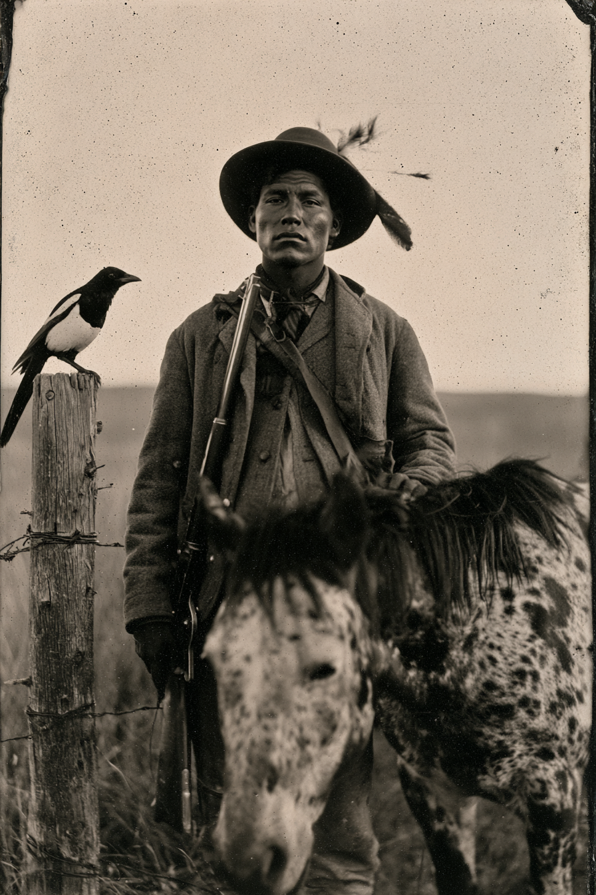

Archetyp: SHAMAN (Schamanen)
Nimíipuu (Nez Perce), zwanzig. An der Presbyterianer-Missionsschule in Lapwai schrieben sie ihn als „Amos“ ein, in Carlisle schnitten sie ihm die Haare und behielten den Namen — und Amos ist, worauf er heute hört, auch bei seinen eigenen Leuten, was Teil des Problems ist.
Er ist der einzige Mann in der Posse, der Blackstone gelesen hat, und der einzige, dem eine Elster folgt.
| Agility | d6 | 1 |
| Smarts | d6 | 1 |
| Spirit | d8 | 2 |
| Strength | d4 | 0 |
| Vigor | d6 | 1 |
| Skill | Attr. | Die | Pts. |
|---|---|---|---|
| Faith | Spi | d8 | 3 |
| Survival | Sma | d8 | 4 |
| Fighting | Agi | d6 | 2 |
| Notice | Sma | d6 | 1 |
| Shooting | Agi | d4 | 1 |
| Riding | Agi | d4 | 1 |
| Weapon | Range | Damage | AP | RoF | Wt. | Cost |
|---|---|---|---|---|---|---|
| Winchester '73 (.44-40) | 24/48/96 | 2W8–1 | 2 | 1 | 5 | $25 |
| 15 Schuss · Mindeststärke W6, er hat W4: –1 auf Schießen | ||||||
| Messer, Bowie | – | Stä+W4+1 | 1 | – | 1 | $4 |
| Power | PP | Range | Dur. | Effect |
|---|---|---|---|---|
| Wilderness Walk | 2 | Self | 1 Stunde | fünf Meilen zählen als eine, Spuren verblassen (Grundbuch S. 77) |
| Boost/Lower Trait | 2 | Smarts | 5 / Instant | Trait ±1 die type, ±2 with a raise |
Nachtängste: –1 auf alle Willenskraft-Proben, nicht auf Glaube-Proben
Er ist pleite. Die Stute hat alles gefressen.
Hintergrund. Er war dreizehn im Sommer 1877 und ging elfhundert Meilen — Whitebird, Big Hole, der Yellowstone, dann der Schnee an den Bear Paws, vierzig Meilen vor Kanada. Was übrig war, kam nach Fort Leavenworth und dann hinunter ins Indianer-Territorium, wo die Malaria seine Schwester holte und etwa ein Drittel aller anderen, und 1880 setzte der Agent ihn in einen Zug nach Carlisle, Pennsylvania, wo er lateinische Deklinationen lernte, Schmiedehandwerk und ein schnelles „yes, sir“. Im Frühjahr ’84 kam er im Wollanzug zur Ponca-Agentur zurück, fließend im Englischen — und stellte fest, dass er das Nimipuutímt-Wort für eine Pflanze verloren hatte, die er als Kind mit seiner Mutter ausgegraben hatte. Er arbeitet jetzt als Dolmetscher und Führer für eine Reporterin des Tombstone Epitaph und die harten Burschen, an die sie sich gehängt hat. Das Geld ist echt und die Richtung ist Norden, und Norden ist die einzige Richtung, die ihn interessiert. Er möchte, dass alle verstehen, dass er an nichts davon glaubt. Er möchte es selbst verstehen.
Build. Geschicklichkeit W6, Verstand W6, Willenskraft W8, Stärke W4, Konstitution W6 · Parade 5, Robustheit 5, 20 MP Glaube W8, Überleben W8, Kämpfen W6, Bemerken W6, Schießen W4, Reiten W4 Talente: Arcane Background (Shaman), Woodsman (Naturbursche), Power Points (Machtpunkte — +5, gesamt 20: die Elster gibt ihm weit mehr, als er will, und er verbrennt es schnell, weil er darauf besteht, das letzte Mal sei Zufall gewesen) Handicaps: Nightmares (Nachtängste) — Major: −1 auf alle Willenskraft-Proben. Betrifft nicht seine Glaube-Fertigkeitsproben, sondern Angstproben und Widerstandsproben. Perfekt: das Ding, das ihn will, kommt nur nachts. · Outsider (Außenseiter) — Minor. Hinweis: das Grundbuch koppelt Außenseiter an eine Fremdsprache und verlangt Punkte in Sprache (Englisch) — diese Klausel hier streichen, sein Englisch ist besser als das der Posse. Sein Außenseitertum ist sozial: zu schulgebildet für die Verbannten in Ponca, zu indianisch für jede Stadt von hier bis Idaho. · Doubting Thomas (Zweifler) — Minor. Vorher mit dem Marshal klären — ein Schamane mit diesem Handicap ist ein bewusster Witz, der nur funktioniert, wenn man die Rationalisierung jedes einzelne Mal durchzieht. Mächte: Wildniswandler (Wilderness Walk, S. 77 — Deadlands-exklusiv: fünf Meilen zählen als eine, Spuren verblassen, und es ist ausdrücklich ein Weg durch die Jagdgründe), Eigenschaft erhöhen/senken Ausrüstung: Winchester ’73 in .44-40, hundert Patronen, eine Appaloosa-Stute — mit zwei Jahren Schulwerkstatt-Lohn aus dem Gatter eines Siedlers in Oregon zurückgekauft, aus einer Blutlinie, die die Armee ’77 beschlagnahmte und zerstreute —, Sattel, Bowiemesser, Schlafrolle, Kaffeekanne. Ein Carlisle-Uniformmantel mit abgeschnittenen Messingknöpfen, den er trägt, weil es das Wärmste ist, was er besitzt. Eine schwarz-weiße Schwanzfeder, die er mindestens neunmal weggeworfen hat.
Aufhänger — der Handel. Er hat nie ein wéyekin gesucht. Jungen sollten allein in die Berge gehen und auf eines warten; erst kam der Krieg, dann Kansas, dann Pennsylvania. Also kam das, was ihn fand, ungebeten. Drei Tage in einer Schlucht bei den Bear Paw Mountains, dreizehn Jahre alt, unter einem toten Pferd versteckt, während die Haubitzen arbeiteten — und eine Elster kam herunter, setzte sich auf das Pferd, sah ihn an, und er atmete weiter. Elstern folgen Armeen. Sie fressen, was übrig bleibt. Was sie nimmt: Aufmerksamkeit — das, was er ihr schuldete und nie gab. Jedes Mal, wenn er eine Macht ruft, nimmt der Vogel ihm eine Sache, an die er sich erinnern kann. Er hat den Klang der Stimme seiner Mutter verloren. Er hat das Wort für eine Pflanze verloren. Er weiß nicht, was er letzten Dienstag verloren hat — und genau daran merkt er, dass er etwas verloren hat. Das Tabu, das alles bricht: er darf sich niemals weigern, für die Toten zu sprechen. Steht er an einem Ort, an dem Menschen getötet wurden, und jemand fragt ihn, was dort geschah, und er schweigt — oder mildert es ab, damit der Zuhörer sein Abendessen behält —, dann geht die Elster und nimmt den Rest auf einmal mit. Er ist berufsmäßiger Dolmetscher für weiße Reisende. Er wird etwa einmal die Woche gebeten, etwas abzumildern. Wohin es läuft: er reitet nach Norden, weil er das Wallowa-Land erreichen und den Vogel dort loswerden will. Er hat noch nicht begriffen, dass der Vogel ihn seit März nach Norden lenkt.
Warum es Spaß macht. Du bist Übersetzer, Späher und Skeptiker der Gruppe und lieferst den nüchternsten Satz der Sitzung („es waren sechzig, und achtunddreißig davon waren Frauen“), während ein Vogel, den sonst niemand sieht, auf dem Zaunpfahl wartet. Und der Running Gag hat Zähne: jedes Mal, wenn du die Posse mit einer Macht rettest, erklärst du geduldig, es sei der Wind gewesen — und dann fällt dir das Gesicht deines Cousins nicht mehr ein.
Beste Szene für beide: Führt die Posse in die Sioux-Nationen (S. 131). Innerhalb der Grenzen arbeitet jeder mit Zwei linke Hände für gefertigte Technik. Ihr handgemachter Bogen funktioniert tadellos, ihr Eid ist bei voller Stärke. Seine Winchester klemmt beim vierten Schuss. Er wird die Elster vor Zeugen um Hilfe bitten müssen — und laut zugeben müssen, dass er bittet.
Regelgrundlage: Regelnotizen · Archetyp-Notizen